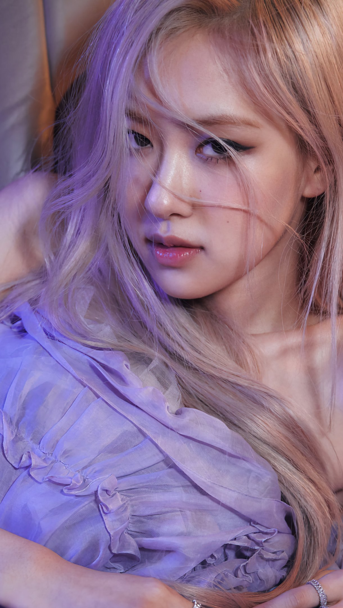

Roseanne Park (Auckland, Nueva Zelanda, 11 de febrero de 1997), tambi�n conocida por su nombre art�stico Ros�, es una cantante, modelo, compositora y bailarina neozelandesa de origen coreano. Es miembro del grupo femenino Blackpink formado por la discogr�fica YG Entertainment en 2016.6 Su debut como solista fue el 12 de marzo de 2021, con el sencillo �On the Ground�.
Primeros a�os
Ros� naci� el 11 de febrero de 1997 en Auckland, Nueva Zelanda, pero fue criada en Melbourne, Australia. De padres inmigrantes surcoreanos7 y con una hermana mayor, a la edad de siete a�os se mud� junto a su familia a Melbourne.8 Asisti� inicialmente a la escuela primaria Kew East y se gradu� en 2009, pasando a estudiar en la escuela secundaria Canterbury Girls Secondary College en Melbourne.9 Comenz� a cantar y aprendi� a tocar la guitarra y el piano cuando era ni�a y actu� en coros de iglesias.810
En 2012, Ros� asisti� a una audici�n en Australia para el sello discogr�fico surcoreano YG Entertainment por sugerencia de su padre,11 ocupando el primer lugar de entre 700 participantes. Tras dos meses, abandon� la escuela, firm� con el sello como aprendiz y se mud� a Se�l. Inicialmente, pens� que la idea de su padre era una broma debido a la distancia y la dificultad de convertirse en cantante en el extranjero, afirmando:
En Australia, no pens� que hubiera muchas posibilidades de convertirme en cantante, especialmente de convertirme en una estrella del K-pop... Estaba viviendo tan lejos del pa�s que nunca se me ocurri� realmente como posibilidad.12
Carrera
2012�2016: Predebut
Tras su llegada a Se�l, Ros� comenz� su entrenamiento en calidad de aprendiz, el que dur� cuatro a�os.12 El 15 de septiembre del mismo a�o, tuvo la oportunidad de participar en la canci�n �Without You� de su compa�ero de agencia G-Dragon, la cual estuvo incluida en el EP One of a Kind del cantante, siendo este su �lbum debut como artista en solitario.1314 Su nombre no fue publicado en el momento del lanzamiento y su cr�dito se revel� luego de su anuncio como miembro del futuro grupo de la compa��a.15 La canci�n alcanz� el puesto n�mero 10 en Gaon Music Chart de Corea del Sur16 y en el n�mero 15 en la lista musical Billboard K-pop Hot 100.17
2016-2020: Debut con Blackpink
Art�culo principal: Blackpink
El 22 de junio de 2016, YG Entertainment anunci� que Ros� ser�a la �ltima integrante de Blackpink, el nuevo grupo femenino de la compa��a, que debut� el 8 de agosto del mismo a�o con el lanzamiento de Square One, un sencillo en CD que conten�a las canciones �Boombayah� y �Whistle�.18
Tras el mete�rico �xito de Blackpink, Ros� fue identificada r�pidamente como una de las mejores voces del k-pop, siendo invitada a diversos programas de televisi�n para mostrar sus dotes vocales. En marzo de 2017, fue invitada al programa de m�sica King of Mask Singer. Su interpretaci�n fue muy bien recibida por parte del p�blico, a lo que Ros� coment� que ella "no sab�a si al p�blico le gustar�a [su] cantar" y que se sinti� "feliz y aliviada" con el resultado positivo.7 En agosto de ese mismo a�o, Ros� apareci� como int�rprete en la segunda temporada del programa Fantastic Duo. El personal de producci�n del programa declar� que su intenci�n era "revelar el atractivo vocal de Ros�, que es diferente de Blackpink".19
2021: -R-, primer �lbum sencillo
El 2 de junio de 2020, YG Entertainment anunci� que Ros� debutar�a en solitario tras el lanzamiento del primer �lbum de larga duraci�n en coreano de Blackpink, The Album.2021 El 30 de diciembre de 2020, en una entrevista con el medio de comunicaci�n de Corea del Sur Osen, su sello revel� que la filmaci�n de su v�deo musical debut comenzar�a a mediados de enero de 2021.22 El 26 de enero, YG Entertainment lanz� un teaser promocional del debut en solitario de Ros� y anunci� que el material de su proyecto en solitario se revelar�a a trav�s de su primer concierto en l�nea Blackpink Livestream Concert: The Show, el 31 de enero de 2021.2324 En la ocasi�n, Ros� present� por primera vez la canci�n �Gone�, ganando comentarios positivos del sitio web de noticias coreano My Daily.25 Luego se inform� que �Gone� correspond�a al lado B de su pr�ximo �lbum. El 3 de marzo de 2021, YG Entertainment anunci� oficialmente que el �lbum debut de Ros�, tendr�a como t�tulo -R- y que se lanzar�a el 12 de marzo de 2021, junto con su sencillo principal, �On the Ground�.26
Tras su lanzamiento, el v�deo musical de �On the Ground� registr� 41,6 millones de visitas en las primeras 24 horas, batiendo el r�cord de 38,4 millones de visualizaciones que ostentaba PSY desde el a�o 2013 con su canci�n �Gentleman�, convirti�ndose en el v�deo musical de un/a solista coreano/a con m�s reproducciones durante las primeras 24 horas.2728 Luego de siete d�as desde su lanzamiento, el v�deo alcanz� las 100 millones de reproducciones, estableciendo un nuevo r�cord para solistas femeninas coreanas, superando la marca de su compa�era de grupo Jennie con su canci�n �Solo� (2018), que hab�a alcanzado dicha cifra en 23 d�as.29 La canci�n debut� y alcanz� el puesto n�mero 1 tanto en las listas Billboard Global 200 como en Billboard Global Excl. U.S., siendo la primera canci�n de un solista coreano en lograrlo en la historia de estos charts.30 -R- tambi�n estableci� el r�cord de ventas m�s altas en la primera semana por una solista coreana, con 448.089 copias vendidas.31 En el Billboard Hot 100, la canci�n alcanz� el puesto 70, convirti�ndose en la canci�n de mayor audiencia de una solista coreana en los Estados Unidos,32 adem�s de conseguir diversas marcas con su presencia en este chart, entre otros, ser la segunda solista femenina en aparecer en esta lista despu�s de CL y el quinto artista solista surcoreano en general de la historia.33 Tras su lanzamiento adem�s, �On the Ground� encabez� la lista de ITunes en 51 regiones distintas del mundo, incluyendo entre otras, Estados Unidos, Brasil, M�xico, Francia y Portugal, y situ�ndose en el 8.� puesto del listado Global Top 50 de dicho servicio de transmisi�n musical.34
El 19 de marzo, se inform� que en China, el �lbum de Ros� hab�a vendido m�s de 1.170.000 copias digitales solo a trav�s de la plataforma QQ Music,35 mientras que el 8 de abril, la compa��a Hanteo, que registra las ventas f�sicas y digitales de los artistas en Corea del Sur, hizo oficial el r�cord de ventas de Ros� a trav�s de dos certificados: el primero por haber vendido m�s de 200.000 copias en ventas de su �lbum sencillo -R- y el segundo es por haber establecido un nuevo r�cord como la solista femenina coreana m�s vendida, con un total de 448.000 copias,36 superando la marca anterior de IU con �Love Poem� con 147.856 ejemplares.37
El 9 de abril, el sitio oficial de Guinness World Records dio a conocer que Ros� hab�a alcanzado dos r�cords mundiales tras el lanzamiento de su primer sencillo en solitario, uno con el v�deo de M�sica de YouTube m�s visto en 24 horas por un artista de k-pop en solitario tras llegar a las 41,6 millones de visitas; y adem�s se convirti� en el primer artista en alcanzar el #1 en una lista Billboard Global como solista y como parte de un grupo, esto gracias a �On the Ground� y �Lovesick Girls� junto a Blackpink, donde ambos sencillos fueron N.� 1 en el chart de Billboard Global 200, adem�s del chart Billboard Global Excl. U.S..38
A finales de 2021, se inform� que, junto a Lisa, fueron las estrellas solistas de k-pop m�s exitosas en la lista Billboard Global 200, al posicionar a �On the Ground� y �Gone� entre las cinco canciones con mayor tiempo de permanencia en la lista durante el a�o, con 7 y 3 semanas respectivamente.39
Arte
Influencias
A trav�s de una entrevista de radio, Ros� mencion� a Taeyang, su compa�ero de agencia, miembro del grupo Big Bang, como uno de sus modelos a seguir en su carrera musical.40 Como m�sica, Ros� tambi�n revel� que considera a la cantante estadounidense Tori Kelly como una inspiraci�n para su estilo musical.41 La voz de Ros� ha recibido reconocimiento en la industria del k-pop por su distintivo timbre vocal, luego de su debut como miembro de Blackpink.42 Tras la actuaci�n de Ros� en un episodio del programa Fantastic Duo, la cantante surcoreana Gummy, a quien Ros� tambi�n cit� como uno de sus modelos musicales,19 afirm� que "la voz [de Ros�] es tan �nica, es el [tipo de] voz que adoran los j�venes".43
Imagen p�blica
Publicidad
Art�culo principal: Anuncios televisivos de Blackpink
En enero de 2017, Ros� junto a su compa�era de grupo, Jisoo, fueron rostros de la campa�a New Balm Cushion para la marca de cosm�ticos Moonshot.44 En octubre de 2018, fue modelo de Adidas para la campa�a de ropa deportiva Long Padded Winter Jacket.45 En noviembre de 2018, tambi�n junto a Jisoo, fueron seleccionadas como modelos de patrocinio para la marca de cosm�ticos surcoreana Kiss Me, para la campa�a HeroineMake Long & Curl / Volume.46 En octubre de 2019, Ros� se revel� como un modelo de promoci�n para el videojuego de rol en l�nea Perfect World m�vil.47
En mayo de 2020, fue rostro para la marca de cuidados de cabello Pantene, para su producto New Silky Smooth Care.48
Adem�s, como miembro de Blackpink y junto a sus compa�eras, ha sido rostro y modelo de importantes marcas a nivel mundial, como Reebok, Nike y Puma495051 en marcas de ropa; Coca-Cola, Pepsi y Nestl�525354 en productos de consumo; OLens,55 LG Corporation,56 Kia Motors,57 Samsung58 y Banco KBank.59
Moda
Art�culo principal: Sesiones fotogr�ficas en revistas de Blackpink
Desde su debut, Ros� ha sido portada de diversas revistas de moda, tanto en Corea como en otros pa�ses en Asia, como C�Ci,60 Dazed,61 W,62 adem�s de revista Elle en sus ediciones de Corea, Tailandia y Hong Kong,636465 y la edici�n china de Dazed;66 en la gran mayor�a, siendo modelo de Yves Saint Laurent.
En la edici�n de agosto de 2020 de la revista W, Ros� fue rostro de la marca de relojes Omega,67 mientras que en la edici�n de octubre de la misma revista, fue modelo para la marca de joyas Tiffany & Co., en la que luci� un collar de 57 quilates de zafiros y diamantes, valorado en $885,000 d�lares.68
En 2020, Ros� fue nombrada embajadora global de la reconocida marca Yves Saint Laurent por Anthony Vaccarello, convirti�ndose en su primera embajadora global en 59 a�os,69 siendo el rostro mundial de la campa�a de oto�o de 2020 para la marca.70 En 2021, Ros� se convirti� en la musa de la marca de cosm�ticos de lujo Yves Saint Laurent Beaut�.71
En abril de 2021, Ros� fue portada de la revista Vogue Australia, luciendo un vestido de Yves Saint Laurent de $3,100 d�lares, en lo que es su primera colaboraci�n con la revista de su pa�s natal, bajo el t�tulo "Ros� de Blackpink, nuestra superestrella global del k-pop".72
El 21 de abril de 2021, fue anunciado que Ros� se convert�a en la nueva embajadora global de la empresa estadounidense Tiffany & Co., compa��a con la que ya hab�a trabajado anteriormente, sum�ndose a una lista que ha incluido celebridades como Lupita Nyong'o, Elle Fanning y el actor y m�sico chino Jackson Yee. Como parte del anuncio, Ros� fue imagen de la campa�a digital "HardWear" de la marca, donde luci� elegantes collares de oro de 18 quilates.73
El 16 de agosto de 2021, Ros� fue anunciada p�blicamente como la nuevo modelo y rostro de la marca de ropa unisex 5252 de O!Oi de Corea del Sur. La marca se�al� que �Ros� tiene la influencia y el encanto inigualable como artista mundial de k-pop, siendo seleccionada como modelo en l�nea con la direcci�n que persigue la marca�.74
El 13 de septiembre de 2021, Ros� fue invitada al importante evento ben�fico de moda Met Gala en la ciudad de New York, en su calidad de embajadora global de la marca Yves Saint Laurent y como invitada especial del Director Creativo de la marca, Anthony Vaccarello, convirti�ndose en la primera artista femenina de k-pop en asistir al evento, y en donde comparti� con figuras como Gigi Hadid, Olivia Rodrigo, Kim Petras, Rihanna y Talia Ryder.75 Dos semanas despu�s, Ros� asisti� a la Semana de la Moda de Par�s como invitada especial para el desfile Primavera/Verano 2022 de Yves Saint Laurent, realizado a los pies de la Torre Eiffel.7677
Impacto e influencia
Desde 2018, ha aparecido en la lista de reputaci�n de marca de celebridades femeninas del Instituto Coreano de Investigaci�n Empresarial,78 una tabla que rastrea a las celebridades coreanas con la mayor cantidad de b�squedas e interacciones en l�nea. Tras alcanzar la segunda posici�n en febrero de 2021, solo por debajo de su compa�era de grupo, Jennie,79 al mes siguiente consigui� por primera vez el primer lugar de la lista.80
En enero de 2021, Ros� se convirti� en la tercera persona coreana m�s seguida en Instagram, con m�s de 34 millones de seguidores.81
En el contexto del lanzamiento de su primer �lbum como solista, en marzo de 2021 estren� su canal personal en YouTube y abri� su cuenta personal en la red social TikTok, alcanzando en �sta, durante la primera semana, 7,5 millones de seguidores.82
En un art�culo de la revista The Times del Reino Unido sobre la ola coreana en m�sica, moda y televisi�n publicado el 18 de octubre de 2021, se mencion� a Ros� como la "reina" de entre todos los actos m�s influyentes, se�alando que �comenz� como parte del grupo de chicas Blackpink y ahora es una influencer de la moda por derecho propio, que posee un atractivo universal que se extiende a todos los continentes�.83
En octubre de 2021, tras la participaci�n de Ros� en la Semana de la Moda de Par�s y la realizaci�n de los cuatro principales eventos de moda de la temporada, la compa��a de an�lisis de datos Launchmetrics se�al� en su resumen financiero que el �xito de Yves Saint Laurent, que increment� su Valor de Impacto en los Medios (MIV) a $28.6 millones de d�lares, se consigui�, en gran parte, gracias al trabajo de Ros� para la marca.84